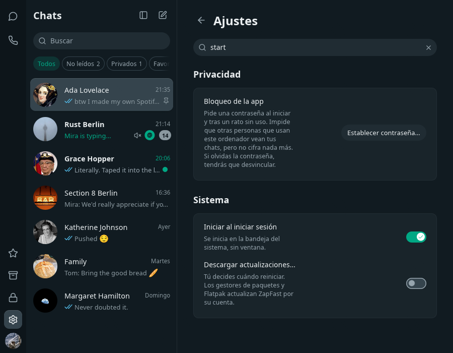
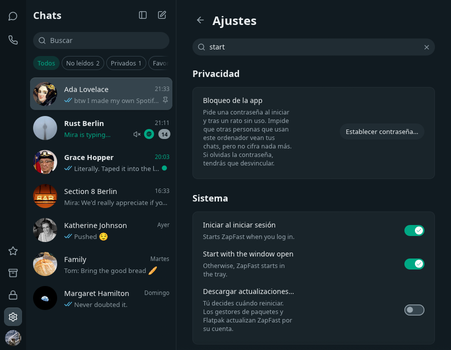

Start at login: choice between tray and window
Synthetic demo content. Same search (start
) on the Settings page, login item on.

Before: one switch, always the tray.

After: the switch, and Start with the window open beneath it.